National Faculty Expertise System
System Administor
Overview
NFES will always have a super administrator who has all rights and access concerning the universities and their institutions/faculty members registered in that particular NFES system.
This super administrator adds the required universities and their administrators. There after, each of the University Administrator can manage the NFES to add its institutions, users etc.
So while perusing the sections
below, please note that the university administrator has the same powers as the
super admin but only within own university. There will be no access to
the details of other universities which are registered in the same NFES host
network.
Log-in
Email id of the user is the log in username for this application.

Multi language display is being supported. Currently, the user has the choice between 2 regional languages – Hindi & Malayalam. It is planned to have all pages displayed in the selected language in the near future.
On clicking Forgot Password? link beside the Login button, the following page opens up:
Figure 2: All users - Forgot password
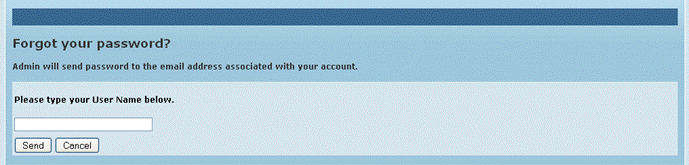
The account details including a system generated password are sent by NFES to the e-mail id entered in this screen. Thus user can log in using this password and may change it using the Change password option.
Change Password
After logging in, the user may change own password at any
time. By clicking on icon  in
the top right corner of the page (in all pages) the folowing page is opened.
New password can be set here.
in
the top right corner of the page (in all pages) the folowing page is opened.
New password can be set here.
Figure 3: All users - Change password
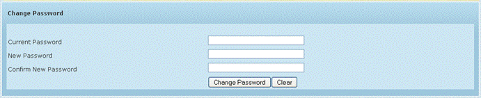
Administrator can change the password without asking the old password
Administrator’s change password screen
Password Strength
The strength of the suggested new password is displayed automatically by the application based on the combination of alphabets, numbers and symbols used. For example, a “Strong” password should have al least 8 characters of which there should be at least 1 capital letter, 1 digit and 1 special character (#, &, % etc).
System Admin
– Masters
In the masters section, the System Administrator can add new
institutions, universities, courses etc to be used by the faculty members
registered in NFES.
General Master
As the name suggests, on this page, new options can be added in the various existing sections of the profile. For e.g. new committee types, departments, project types, specializations etc. (Fig 10).
Figure 12: System Admin - General Master
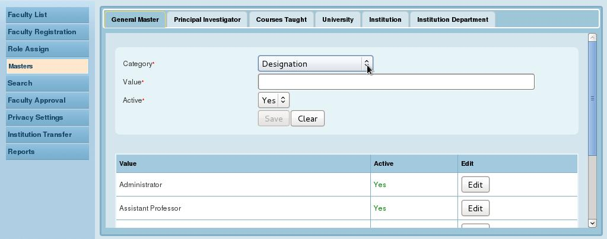
Click Edit for a line item in the list of options already saved for the selected category to update the details of that entry.
Principal Investigator Master
In this section, new Principal Investigators can be added and details of existing PIs can be modified.
Figure 13: System Admin - Principal Investigator Master
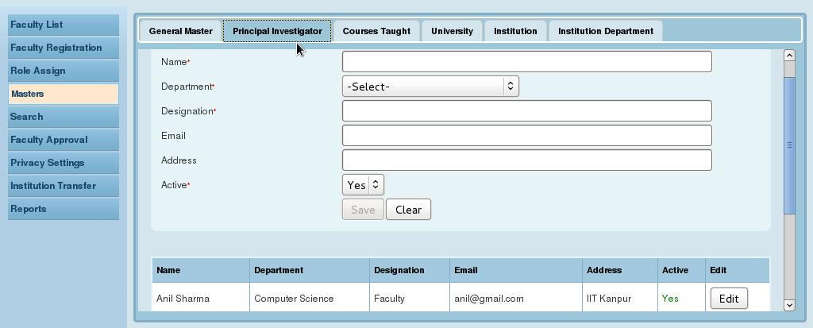
Click Save button to add details of a new PI.
Click Edit for a line item in Fig 13 to edit a existing PI
Courses Taught Master
Here, for each saved faculty member, new course names (taught by the particular faculty member) can be added. This data will populated in course taught tab of faculty profile creation page.
Figure 14: System Admin - Courses Taught Master
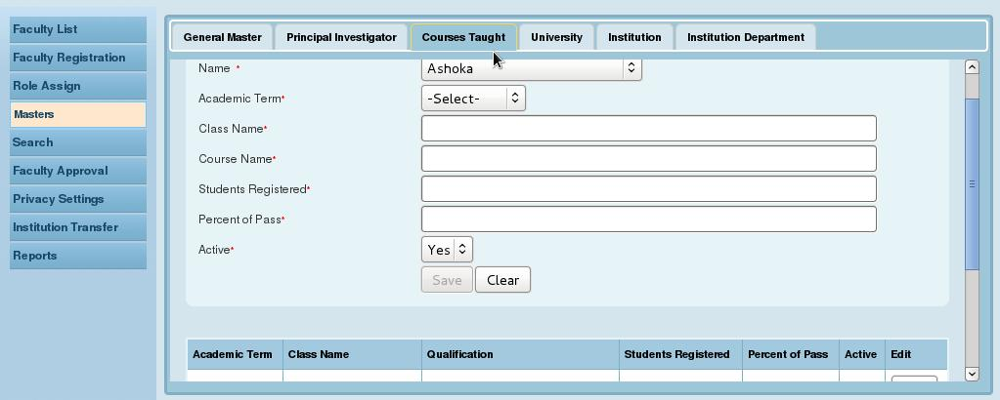
Click Edit for a line item
University Master
In this page, a new university can be added to NFES and details of saved universities, modified.
Figure 15: System Admin - University Master
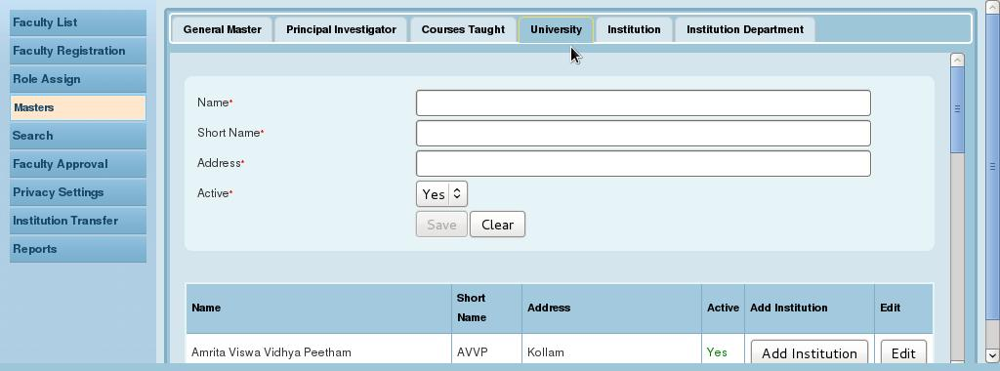
Click Edit for a line item
Institutions can also added by clicking the ‘Add Institution’ button
Institution Master
In this page, new institutions can be added for already saved universities in NFES.
Figure 16: System Admin - Institution Master
Click Edit for a line item.
New Department can added by clicking the ‘Add Department’ button
Institution Department Master
For each institution, departments can be added here from a predefined list of departments. The faculty users of the institution will be registered into each of these departments.
Figure 17: Institution Department Master

System
Admin - User Registration
System administrator first registers the faculty member. There after, the faculty member can add details to create profiles for themselves.
Once the details are saved, the System Administrator is alerted when he logs in.
When the administrator approves of the saved data, the particular details are officially approved and further modification is not allowed.
Following are the sections which complete the faculty profile:
Figure 4: System Admin - Faculty Registration

System Admin - Assigning role to
user
Figure 5: System Admin - Role Assign
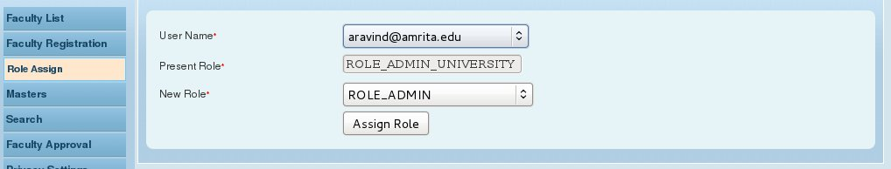
Currently there are just 2 roles – that of the system administrator and that of the Faculty. So all users created by the admin are automatically given the role of faculty.
The screen above is intended for re-assigning roles if and when necessary.
The faculty’s sections are given in detail in the Faculty’s Guide.
System Admin – Faculty List
(home)
The Faculty List is the System Admin’s home page. In this page by default, a list is displayed of all faculty users based on the filtering criteria.
In each case, the System Admin has the privilege to view and/or edit the details.
To narrow down this list a simple search option is provided above so that shorter lists may be displayed for a given university or institution. Even more specifically, user (faculty) name can also be searched for.
Figure 6: System Admin - Faculty List
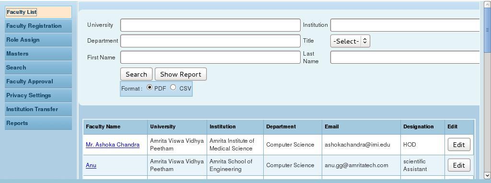
On clicking Edit button, the faculty’s profile is opened with all the details as captured in the menu tabs on the left pane (Fig below)
Figure 7: System Admin - Edit faculty profile
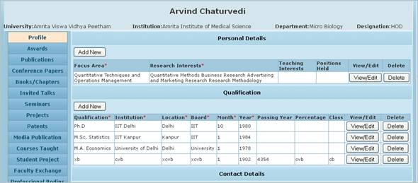
The Edit feature for the Profile page of a faculty is shown above. Edit and Delete buttons have been provided for the line items. Clicking Edit button for a line item will open the pop-up displaying the details which are editable. Certain details like Contact details can be modified on the same screen.
Similarly there is provision to Edit and Delete in all tabs on the left.
After verifying the details the System Admin can click on this button to save the details. Currently, clicking this button will approve data in all tabs at one go. It is not necessary to approve in every tab.
Faculty List Print
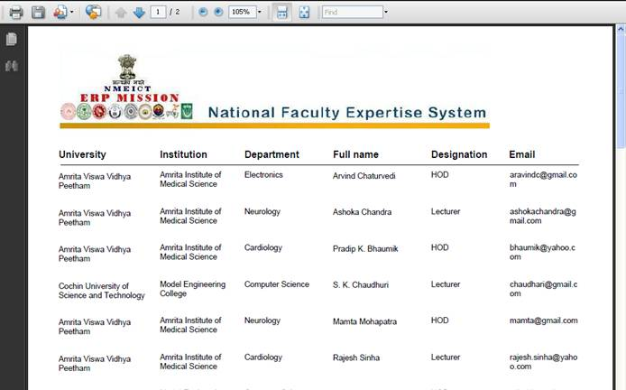
System Admin – Profile
approval
The profile details created by each faculty need to be approved by the Admin before they can be published. The approval feature is enabled for each record in each tab for a faulty profile.
A search feature is provided for the admin to search for specific records which are pending approval.
Click on ‘Approval’ option
Select the desired tab with the ‘category’ (e.g.Award)
Select ‘Pending’ in the
‘Show’ field. The other options are “Approved” and
“All”
Click on Search
button.
All records belonging to the selected tab and pending approval are listed
Click Approve button for the desired line item.
Data will be displayed in new window.
After verifying or editing the data click on Save and Approve button
Figure 8: System Admin - Approval
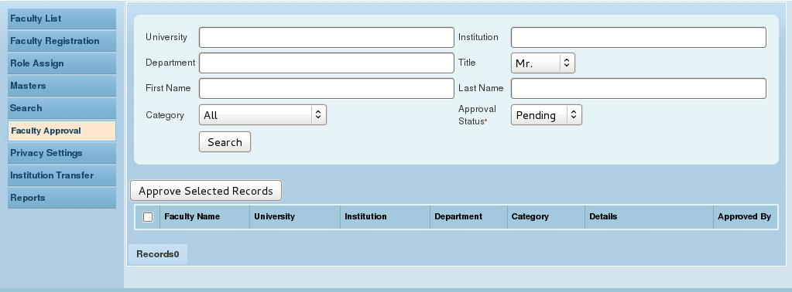
There is the option to view the approved records in the Search screen.
System Admin – Search
Simple Search
Given below is the Simple Search page with option to search with basic search criteria like institution, and university. There is a further provision to search for a particular attribute within given date range.
For e.g. search for a journal paper between 1-Jan-2010 and 1-Apr-2010.
Select University and Institution
In Search by field select – publication date
Select Between
And in the Value fields enter start/end dates. Date range format is YYYY-MM-DD.
Figure 9: System Admin - Search
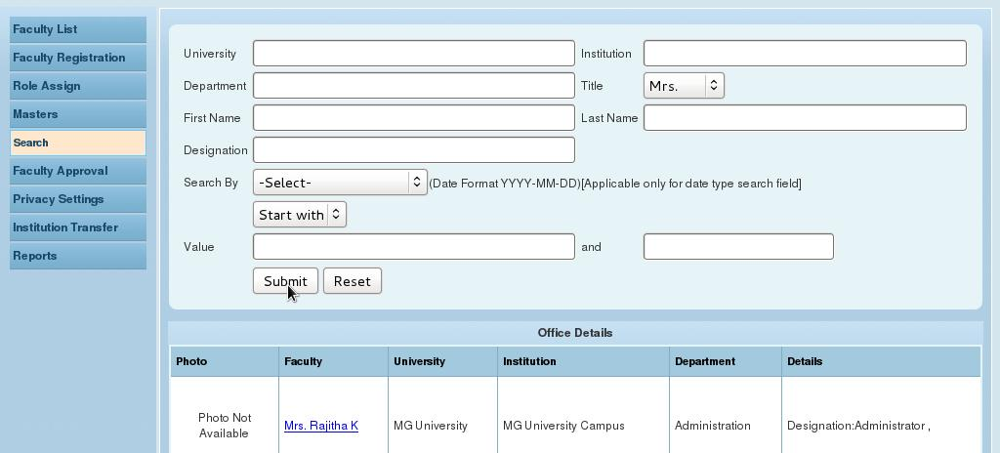
Please note that only those details approved by the administrator get displayed in the search results.
Currently blank search is also possible i.e all records may be displayed if no search criteria given by the user.
In every search result, a Details link is provided for each line item (faculty member).
On clicking Details for a line item, the particular faculty member’s details are displayed on a single page as shown below:
Figure 10: System Admin –Details link to Faculty Details
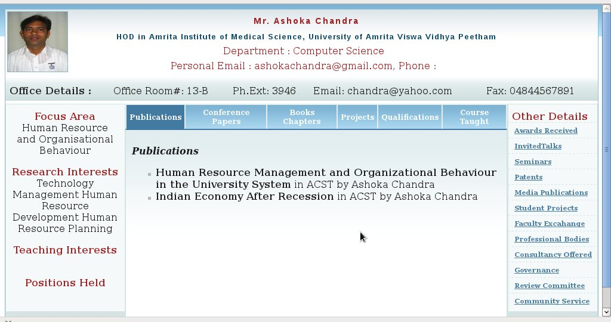
Public and Private Records of
Faculty
On this page, it is possible for the administrator to decide whether a particular detail is to be published for all to see. Privacy setting is possible at faculty records level. For e.g. the details of one particular book authored by a faculty member may be assigned “Private” by the administrator.
On the list of tabs on the left, click tab Public and private records of Faculty.
In the opened page, search for the records required.
In the Results table, select the checkbox in “Public” column for those records that may be made public.
Uncheck the “Public’ box for those records that should remain private.
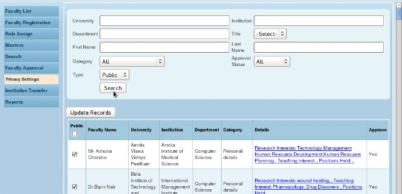
Reports
The System Administrator has access to reports giving details at the university, institution and department level.
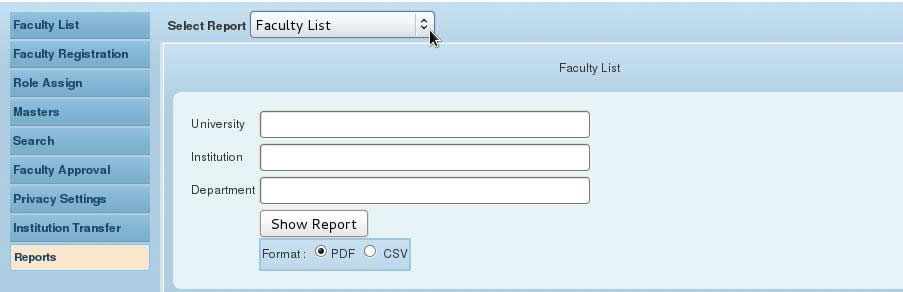

This report is used for showing periodic approved details of 17 tabs.
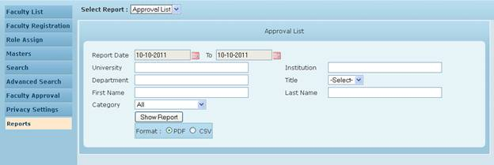
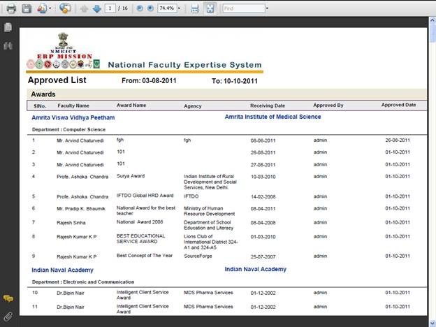